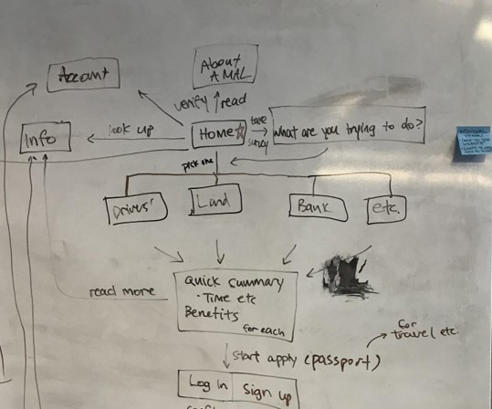
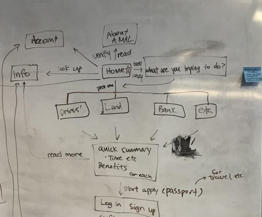
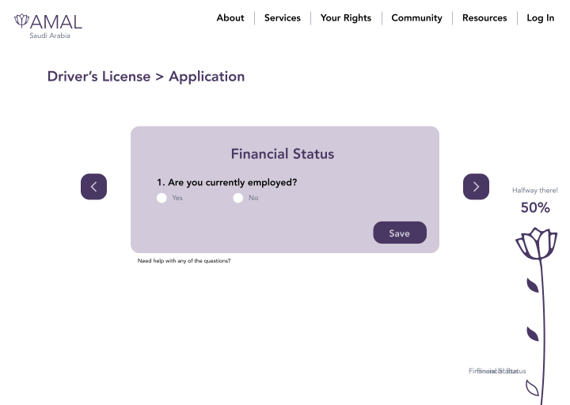
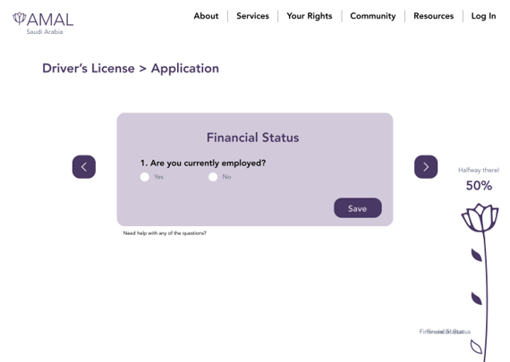

During the past several decades, the world has seen improvements in legal gender parity, but the full adoption and application of women’s rights remains unseen. Though a global problem, women in the Middle East and North Africa (MENA) face greater gender inequality; according to the World Bank, over the past years MENA has made fewer legal reforms for gender equality than any region – just twelve. MENA countries continue to reform regulations to improve gender equality but laws can only go so far. When it comes enabling women’s full economic, political, and social participation, many women are faced with barriers such as lack of financial resources, lack of knowhow, and fear of retaliation should exercise their rights. Amal, a new legal software program and platform, is proposed as a contributory solution for “achiev[ing] gender equality and empower all women and girls”. Amal is a legal software system and simple online platform through which women in MENA countries can learn more about the legal rights granted to them in their country of residence, and secure and submit essential documentation needed for basic rights. Such rights are crucial to women accessing further economic, educational, and social opportunities.
Women are literate, with access to Internet and the devices required to access it. Our users want to empower themselves and become more independent; they are self-motivated. Males are not always inclusive, preventing women from pursuing their own interests, and the legal system institutionalized this. Credit cards are not commonly used for online payments. People prefer to pay in-person.
 



 
